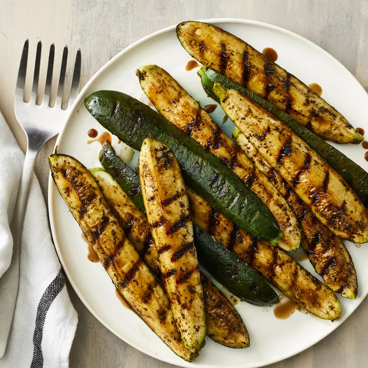

Description
A simple grilled zucchini recipe with a touch of balsamic vinegar, garlic, and Italian seasoning.
Ingredients
- 2 zucchinis
- 2 teaspoons olive oil
- 1 teaspoon Italian seasoning
- 1/2 teaspoon garlic powder
- 1 pinch of salt
- 2 tablespoons balsamic vinegar
Steps
- Preheat an outdoor grill for medium-low heat and lightly oil the grate.
- Brush zucchini with olive oil. Sprinkle seasoning over zucchini.
- Cook on preheated grill 3 to 4 minutes per side.
Return to main page
Return to top